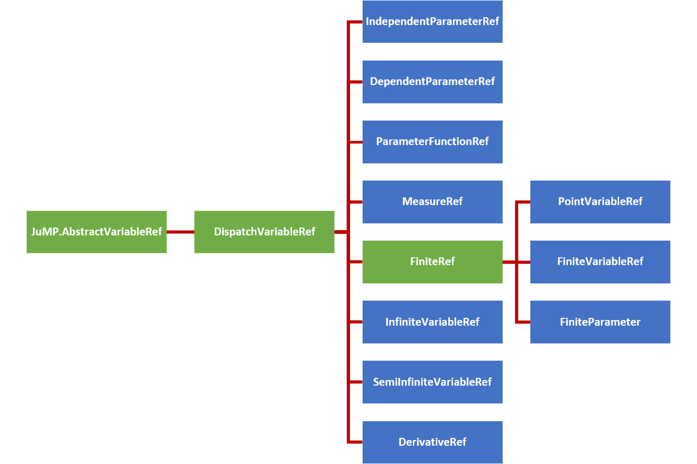

Expressions
A guide for the defining and understanding the variable expressions used in InfiniteOpt. See the technical manual for more details.
Nonlinear modeling is handled differently in InfiniteOpt vs JuMP. See Nonlinear Expressions for more information.
Overview
Expressions in InfiniteOpt (also called functions) refer to mathematical statements involving variables and numbers. Thus, these comprise the mathematical expressions used that are used in measures, objectives, and constraints. Programmatically, InfiniteOpt simply extends JuMP expression types and methods principally pertaining to affine and quadratic mathematical expressions. A natively supported abstraction for general nonlinear expressions is planned for development since that of JuMP is not readily extendable.
Parameter Functions
As described further below, InfiniteOpt.jl only supports affine and quadratic expressions in its current rendition. However, there several use cases where we might want to provide a more complex known function of infinite parameter(s) (e.g., nonlinear setpoint tracking). Thus, we provide parameter function objects that given a particular realization of infinite parameters will output a scalar value. Note that this can be interpreted as an infinite variable that is constrained to a particular known function. This is accomplished via @parameter_function or parameter_function and is exemplified by defining a parameter function f(t) that uses sin(t):
julia> using InfiniteOpt;
julia> model = InfiniteModel();
julia> @infinite_parameter(model, t in [0, 10]);
julia> @parameter_function(model, f == sin(t))
f(t)Here we created a parameter function object, added it to model, and then created a Julia variable f that serves as a GeneralVariableRef that points to it. From here we can treat f as a normal infinite variable and use it with measures, derivatives, and constraints. For example, we can do the following:
julia> @variable(model, y, Infinite(t));
julia> df = deriv(f, t)
∂/∂t[f(t)]
julia> meas = integral(y - f, t)
∫{t ∈ [0, 10]}[y(t) - f(t)]
julia> @constraint(model, y - f <= 0)
y(t) - f(t) ≤ 0.0, ∀ t ∈ [0, 10]We can also define parameter functions that depend on multiple infinite parameters even use an anonymous function if preferred:
julia> @infinite_parameter(model, x[1:2] in [-1, 1]);
julia> @parameter_function(model, myname == (t, x) -> t + sum(x))
myname(t, x)In many applications, we may also desire to define an array of parameter functions that each use a different realization of some parent function by varying some additional positional/keyword arguments. We readily support this behavior since parameter functions can be defined with additional known arguments:
julia> @parameter_function(model, pfunc_alt[i = 1:3] == t -> mysin(t, as[i], b = 0))
3-element Vector{GeneralVariableRef}:
pfunc_alt[1](t)
pfunc_alt[2](t)
pfunc_alt[3](t)The main recommended use case for parameter_function is that it is amenable to define complex anonymous functions via a do-block which is useful for applications like defining a time-varied setpoint:
julia> setpoint = parameter_function(t, name = "setpoint") do t_supp
if t_supp <= 5
return 2.0
else
return 10.2
end
end
setpoint(t)Please consult the following links for more information about defining parameter functions: @parameter_function and parameter_function.
Beyond this, there are a number of query and modification methods that can be employed for parameter functions and these are detailed in the technical manual Section below.
Variable Hierarchy
Expressions employ variable reference types inherited from JuMP.AbstractVariableRef to form expression objects. InfiniteOpt uses a hierarchy of such types to organize the complexities associated with modeling infinite dimensional programs. The figure below summarizes this hierarchy of variable reference types where the abstract types are depicted in green and the concrete types are shown blue.

In consistently with JuMP expression support, GeneralVariableRef exists as a variable reference type that is able to represent any of the above concrete subtypes of DispatchVariableRef. This allows the expression containers to be homogeneous in variable type. This is a paradigm shift from previous versions of InfiniteOpt that used the hierarchy of types directly to construct expressions. This behavior led to stability and performance limitations and thus a has been discontinued.
However, the variable hierarchy is still used to create for variable methods. To accomplish this appropriate GeneralVariableRef dispatch methods are implemented (which are detailed in User Methods section at the bottom of this page) that utilize dispatch_variable_ref to create the appropriate concrete subtype of DispatchVariableRef and call the appropriate underlying method. These dispatch methods have been implemented for all public methods and the underlying methods are what are documented in the method manuals throughout the User Guide pages.
Affine Expressions
An affine expression pertains to a mathematical function of the form:
\[f_a(x) = a_1x_1 + ... + a_nx_n + b\]
where $x \in \mathbb{R}^n$ denote variables, $a \in \mathbb{R}^n$ denote coefficients, and $b \in \mathbb{R}$ denotes a constant value. Such expressions, are prevalent in any problem than involves linear constraints and/or objectives.
In InfiniteOpt, affine expressions can be defined directly using Julia's arithmetic operators (i.e., +, -, *, etc.) or using @expression. For example, let's define the expression $2y(t) + z - 3t$ noting that the following methods are equivalent:
julia> @infinite_parameter(model, t in [0, 10])
t
julia> @variable(model, y, Infinite(t))
y(t)
julia> @variable(model, z)
z
julia> expr = 2y + z - 3t
2 y(t) + z - 3 t
julia> expr = 2 * y + z - 3 * t
2 y(t) + z - 3 t
julia> expr = @expression(model, 2y + z - 3t)
2 y(t) + z - 3 t
julia> typeof(expr)
GenericAffExpr{Float64, GeneralVariableRef}Notice that coefficients to variables can simply be put alongside variables without having to use the * operator. Also, note that all of these expressions are stored in a container referred to as a GenericAffExpr which is a JuMP object for storing affine expressions.
Where possible, it is preferable to use @expression for defining expressions as it is much more efficient than explicitly using the standard operators.
GenericAffExpr objects contain 2 fields which are:
constant::CoefTypeThe constant value of the affine expression.terms::OrderDict{VarType, CoefType}A dictionary mapping variables to coefficients.
For example, let's see what these fields look like in the above example:
julia> expr.terms
OrderedCollections.OrderedDict{GeneralVariableRef, Float64} with 3 entries:
y(t) => 2.0
z => 1.0
t => -3.0
julia> expr.constant
0.0Notice that the ordered dictionary preserves the order in which the variables appear in the expression.
More information can be found in the documentation for affine expressions in JuMP.
Quadratic Expressions
A quadratic function pertains to a mathematical function of the form:
\[f_q(x) = a_1x_1^2 + a_2 x_1 x_2 + ... + a_m x_n^2 + f_a(x)\]
where $x \in \mathbb{R}^n$ are the variables, $f_a(x): \mathbb{R}^n \mapsto \mathbb{R}$ is an affine function, and $m = n(n+1)/2$ is the number of unique combinations of variables $x$. Like affine expressions, quadratic expressions can be defined via Julia's arithmetic operators or via @expression. For example, let's define $2y^2(t) - zy(t) + 42t - 3$ using the following equivalent methods:
julia> expr = 2y^2 - z * y + 42t - 3
2 y(t)² - z*y(t) + 42 t - 3
julia> expr = @expression(model, 2y^2 - z * y + 42t - 3)
2 y(t)² - y(t)*z + 42 t - 3
julia> typeof(expr)
GenericQuadExpr{Float64, GeneralVariableRef}Again, notice that coefficients need not employ *. Also, the object used to store the expression is a GenericQuadExpr which is a JuMP object used for storing quadratic expressions.
GenericQuadExpr object contains 2 data fields which are:
aff::GenericAffExpr{CoefType,VarType}An affine expressionterms::OrderedDict{UnorderedPair{VarType}, CoefType}A dictionary mapping quadratic variable pairs to coefficients.
Here the UnorderedPair type is unique to JuMP and contains the fields:
a::AbstractVariableRefOne variable in a quadratic pairb::AbstractVariableRefThe other variable in a quadratic pair.
Thus, this form can be used to store arbitrary quadratic expressions. For example, let's look at what these fields look like in the above example:
julia> expr.aff
42 t - 3
julia> typeof(expr.aff)
GenericAffExpr{Float64, GeneralVariableRef}
julia> expr.terms
OrderedCollections.OrderedDict{UnorderedPair{GeneralVariableRef}, Float64} with 2 entries:
UnorderedPair{GeneralVariableRef}(y(t), y(t)) => 2.0
UnorderedPair{GeneralVariableRef}(y(t), z) => -1.0Notice again that the ordered dictionary preserves the order.
Polynomial expressions can be represented by introducing dummy variables and nested quadratic/affine expressions. For instance, $z^3 + 2$ can be expressed by introducing a dummy variable $x = z^2$:
julia> @variable(model, x)
x
julia> @constraint(model, x == z^2)
-z² + x = 0.0
julia> expr = @expression(model, z * x + 2)
z*x + 2Alternatively, can we can just use our nonlinear modeling interface:
julia> expr = @expression(model, z^3 + 2)
z^3 + 2More information can be found in the documentation for quadratic expressions in JuMP.
Nonlinear Expressions
General nonlinear expressions as generated via JuMP.@NLexpression, JuMP.@NLobjective, and/or JuMP.@NLconstraint macros in JuMP are not extendable for extension packages like InfiniteOpt. A fundamental overhaul is planned to resolve this problem (check the status on GitHub), but this will likely require 1-3 years to resolve.
JuMP-dev has secured funding to overhaul their nonlinear interface and hence the timeline for resolving many of the limitations should be expedited. Check out their announcement for more information.
Thus, in the interim, we circumvent this problem in InfiniteOpt by implementing our own general nonlinear expression API. However, we will see that our interface treats nonlinear expressions as 1st class citizens and thus is generally more convenient than using JuMP's current legacy nonlinear modeling interface. We discuss the ins and outs of this interface in the subsections below.
Unlike affine/quadratic expressions, our nonlinear interface differs from that of JuMP. Thus, it is important to carefully review the sections below to familiarize yourself with our syntax.
Our new general nonlinear modeling interface is experimental and thus is subject to change to address any unintended behavior. Please notify us on GitHub if you encounter any unexpected behavior.
Basic Usage
In InfiniteOpt we can define nonlinear expressions in similar manner to how affine/quadratic expressions are made in JuMP. For instance, we can make an expression using normal Julia code outside a macro:
julia> @infinite_parameter(model, t ∈ [0, 1]); @variable(model, y, Infinite(t));
julia> expr = exp(y^2.3) * y - 42
exp(y(t)^2.3) * y(t) - 42
julia> typeof(expr)
NLPExprThus, the nonlinear expression expr of type NLPExpr is created can be readily incorporated to other expressions, the objective, and/or constraints. For macro-based definition, we simply use the @expression, @objective, and @constraint macros (which in JuMP are only able to handle affine/quadratic expressions):
julia> @expression(model, expr, exp(y^2.3) * y - 42)
exp(y(t)^2.3) * y(t) - 42
julia> @objective(model, Min, ∫(0.3^cos(y^2), t))
∫{t ∈ [0, 1]}[0.3^cos(y(t)²)]
julia> @constraint(model, constr, y^y * sin(y) + sum(y^i for i in 3:4) == 3)
constr : (y(t)^y(t) * sin(y(t)) + y(t)^3 + y(t)^4) - 3 = 0.0, ∀ t ∈ [0, 1]The @NLexpression, @NLobjective, and @NLconstraint macros used by JuMP are not supported by InfiniteOpt. Instead, we can more conveniently use the @expression, @objective, and @constraint macros directly.
Natively, we support all the same nonlinear functions/operators that JuMP does. Note however that there are 3 caveats to this:
- Functions from
SpecialFunctions.jlcan only be used ifusing SpecialFunctionsis included first - The
ifelsefunction must be specifiedInfiniteOpt.ifelse(because the nativeifelseis a core function that cannot be extended for our purposes) - The logic operators
&and|must be used instead of&&and||when defining a nonlinear expression.
Let's exemplify the above caveats:
julia> using SpecialFunctions
julia> y^2.3 * gamma(y)
y(t)^2.3 * gamma(y(t))
julia> InfiniteOpt.ifelse(y == 0, y^2.3, exp(y))
ifelse(y(t) == 0, y(t)^2.3, exp(y(t)))
julia> InfiniteOpt.ifelse((y <= 0) | (y >= 3), y^2.3, exp(y))
ifelse(y(t) <= 0 || y(t) >= 3, y(t)^2.3, exp(y(t)))The logical comparison operator == will yield an NLPExpr instead of a Bool when one side is a variable reference or an expression. Thus, for creating Julia code that needs to determine if the Julia variables are equal then isequal should be used instead:
julia> isequal(y, y)
true
julia> y == t
y(t) == tWe can interrogate which nonlinear functions/operators our model currently supports by invoking all_registered_functions. Moreover, we can add additional functions via registration (see Function Registration for more details).
Finally, we highlight that nonlinear expressions in InfiniteOpt support the same linear algebra operations as affine/quadratic expressions:
julia> @variable(model, v[1:2]); @variable(model, Q[1:2, 1:2]);
julia> @expression(model, v' * Q * v)
0 + (Q[1,1]*v[1] + Q[2,1]*v[2]) * v[1] + (Q[1,2]*v[1] + Q[2,2]*v[2]) * v[2]Function Tracing
In similar manner to Symbolics.jl, we support function tracing. This means that we can create nonlinear modeling expression using Julia functions that satisfy certain criteria. For instance:
julia> myfunc(x) = sin(x^3) / tan(2^x);
julia> expr = myfunc(y)
sin(y(t)^3) / tan(2^y(t))However, there are certain limitations as to what internal code these functions can contain. The following CANNOT be used:
- loops (unless it only uses very simple operations)
- if-statements (see workaround below)
- non-registered functions (if they cannot be traced).
If a particular function is not amendable for tracing, try registering it instead. See Function Registration for details.
We can readily workaround the if-statement limitation using InfiniteOpt.ifelse. For example, the function:
function mylogicfunc(x)
if x >= 0
return x^3
else
return 0
end
endis not amendable for function tracing, but we can rewrite it as:
julia> function mylogicfunc(x)
return InfiniteOpt.ifelse(x >= 0, x^3, 0)
end
mylogicfunc (generic function with 1 method)
julia> mylogicfunc(y)
ifelse(y(t) >= 0, y(t)^3, 0)which is amendable for function tracing.
Linear Algebra
As described above in the Basic Usage Section, we support linear algebra operations with nonlinear expressions! This relies on our basic extensions of MutableArithmetics, but admittedly this implementation is not perfect in terms of efficiency.
Using linear algebra operations with nonlinear expression provides user convenience, but is less efficient than using sums. Thus, sum should be used instead when efficiency is critical.
julia> v' * Q * v # convenient linear algebra syntax
0 + (Q[1,1]*v[1] + Q[2,1]*v[2]) * v[1] + (Q[1,2]*v[1] + Q[2,2]*v[2]) * v[2]
julia> sum(v[i] * Q[i, j] * v[j] for i in 1:2, j in 1:2) # more efficient
v[1] * Q[1,1] * v[1] + v[2] * Q[2,1] * v[1] + v[1] * Q[1,2] * v[2] + v[2] * Q[2,2] * v[2]We can also set vectorized constraints using the .==, .<=, and .>= operators:
julia> @variable(model, W[1:2, 1:2]);
julia> @constraint(model, W * Q * v .== 0)
2-element Vector{InfOptConstraintRef}:
(0 + (W[1,1]*Q[1,1] + W[1,2]*Q[2,1]) * v[1] + (W[1,1]*Q[1,2] + W[1,2]*Q[2,2]) * v[2]) - 0 == 0.0
(0 + (W[2,1]*Q[1,1] + W[2,2]*Q[2,1]) * v[1] + (W[2,1]*Q[1,2] + W[2,2]*Q[2,2]) * v[2]) - 0 == 0.0However, it is important to note that although vector constraints can be expressed in InfiniteOpt, they are not supported by JuMP and thus an error is incurred if we try to solve an InfiniteOpt model using the TranscriptionOpt backend:
julia> @constraint(model, W * Q * v in MOI.Zeros(2)) # will cause solution error
[0 + (W[1,1]*Q[1,1] + W[1,2]*Q[2,1]) * v[1] + (W[1,1]*Q[1,2] + W[1,2]*Q[2,2]) * v[2], 0 + (W[2,1]*Q[1,1] + W[2,2]*Q[2,1]) * v[1] + (W[2,1]*Q[1,2] + W[2,2]*Q[2,2]) * v[2]] in MathOptInterface.Zeros(2)
julia> optimize!(model)
ERROR: TranscriptionOpt does not support vector constraints of general nonlinear expressions because this is not yet supported by JuMP.Function Registration
In a similar spirit to JuMP and Symbolics, we can register user-defined functions such that they can be directly incorporated into nonlinear expressions. This is done via the @register macro. We can register any function that takes scalar arguments (which can accept inputs of type Real):
julia> h(a, b) = a * b^2; # an overly simple example user-defined function
julia> @register(model, h(a, b));
julia> h(y, 42)
h(y(t), 42)Where possible it is preferred to use function tracing instead of function registration. This improves performance and can prevent unintentional errors. See Function Tracing for more details.
To highlight the difference between function tracing and function registration consider the following example:
julia> f(a) = a^3;
julia> f(y) # user-function gets traced
y(t)^3
julia> @register(model, f(a)) # register function
f (generic function with 2 methods)
julia> f(y) # function is no longer traced
f(y(t))Thus, registered functions are incorporated directly. This means that their gradients and hessians will need to determined as well (typically occurs behind the scenes via auto-differentiation with the selected optimizer model backend). However, again please note that in this case tracing is preferred since f can be traced.
Let's consider a more realistic example where the function is not amenable to tracing:
julia> function g(a)
v = 0
for i in 1:4
v *= v^a
if v >= 1
return v
end
end
return a
end;
julia> @register(model, g(a));
julia> g(y)
g(y(t))Notice this example is a little contrived still, highlighting that in most cases we can avoid registration. However, one exception to this trend, are functions from other packages that we might want to use. For example, perhaps we would like to use the eta function from SpecialFunctions.jl which is not natively supported:
julia> using SpecialFunctions
julia> my_eta(a) = eta(a);
julia> @register(model, my_eta(a));
julia> my_eta(y)
my_eta(y(t))Notice that we cannot register SpecialFunctions.eta directly due to scoping limitations that are inherited in generating constructor functions on the fly (which necessarily occurs behind the scenes with @register).
Now in some cases we might wish to specify the gradient and hessian of a univariate function we register to avoid the need for auto-differentiation. We can do this, simply by adding them as additional arguments when we register:
julia> my_squared(a) = a^2; gradient(a) = 2 * a; hessian(a) = 2;
julia> @register(model, my_squared(a), gradient, hessian);
julia> my_squared(y)
my_squared(y(t))Note the specification of the hessian is optional (it can separately be computed via auto-differentiation if need be).
For multivariate functions, we can specify the gradient (the hessian is not currently supported by JuMP optimizer models) following the same gradient function structure that JuMP uses:
julia> w(a, b) = a * b^2;
julia> function wg(v, a, b)
v[1] = b^2
v[2] = 2 * a * b
return
end;
julia> @register(model, w(a, b), wg) # register multi-argument function
w (generic function with 4 methods)
julia> w(42, y)
w(42, y(t))Note that the first argument of the gradient needs to accept an AbstractVector{Real} that is then filled in place.
We do not currently support vector inputs or vector valued functions directly, since typically JuMP optimizer model backends don't support them. However, this limitation can readily be removed if there is a use case for it (please reach out to us if such an addition is needed).
Expression Tree Abstraction
The nonlinear interface in InfiniteOpt is enabled through the NLPExpr type which uses an intelligent expression tree structure. In particular, we use a memory efficient Left-Child Right-Sibling Tree whose leaves (nodes with no children) can be:
- constants (i.e.,
Int,Float64, and/orBool) - variables (
GeneralVariableRefs) - affine expressions (
GenericAffExpr{Float64, GeneralVariableRef}) - quadratic expressions (
GenericQuadExpr{Float64, GeneralVariableRef})
Moreover, the internal tree nodes correspond to functions/operators which are stored as Symbol names (which correspond to registered functions via name_to_function). We accomplish this via LeftChildRightSiblingTrees.jl in combination with NodeData to store the content of each node.
We can view the tree structure of an NLPExpr using print_expression_tree:
julia> expr = exp(y^2.3) * y - 42
exp(y(t)^2.3) * y(t) - 42
julia> print_expression_tree(expr)
-
├─ *
│ ├─ exp
│ │ └─ ^
│ │ ├─ y(t)
│ │ └─ 2.3
│ └─ y(t)
└─ 42Here, we can see the algebraic expression is decomposed into an expression tree were the leaves contain the variables/constants (and can contain affine/quadratic expressions) and the intermediate nodes contain function names. Note that the top most node is called the root node and that is what NLPExpr stores in its tree_root field:
julia> expr.tree_root
Node(-)
julia> typeof(expr.tree_root)
LeftChildRightSiblingTrees.Node{NodeData}The rest of the tree can then be interrogated by traversing the tree as enabled by the API of LeftChildRightSiblingTrees.jl.
In addition to the API of LeftChildRightSiblingTrees.jl, we provide some mapping functions that are useful for extensions. First, with map_expression we can create a new NLPExpr based on an existing NLPExpr where a transformation is applied to each variable:
julia> map_expression(v -> v^2, expr)
exp((y(t)²)^2.3) * (y(t)²) - 42We also provide map_nlp_to_ast which can be used to map an NLPExpr to a Julia Abstract Syntax Tree (AST) where a transformation is applied to each variable:
julia> jump_model = Model(); @variable(jump_model, y_jump);
julia> map_nlp_to_ast(v -> y_jump, expr)
:(exp(y_jump ^ 2.3) * y_jump - 42)This is useful for converting NLPExprs into ASTs that can be used in JuMP via its add_nonlinear_expression API.